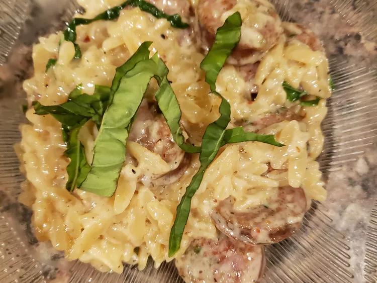

Back to Home
Creamy Sausage Orzo Skillet

Description
This creamy sausage orzo skillet is a one pot-and-done comfort food dish.
It can easily be doubled, and you can use any sausage you like. It is delicious!
Ingredients
- 1.5 teaspoons olive or avocado oil
- 4 italian sausages, sliced into rounds
- 3 teaspoons garlic paste
- 4 ounces orzo pasta
- 1 cup chicken broth
- 1 cup heavy cream
- 1 teaspoon salt
- 1 teaspoon freshly ground black pepper
- 1 teaspoon garlic powder
- 1 teaspoon onion powder
- 1 teaspoon red chili flakes (optional)
- 4 large basil leaves, shredded (optional)
- 1/4 cup freshly grated Parmesan cheese
Steps
- Heat a heavy bottom pot over medium-low heat and drizzle in oil.
Fry sausage rounds until browned and cooked through, about 5 minutes.
Add garlic and cook for 1 minute.
- Add orzo and cook and stir until lightly golden brown, about 1 minute.
Pour in chicken broth and 1/2 cup cream. Stir in salt, pepper, garlic powder, onion powder,
and chili flakes.
- Bring mixture to a boil, then cover and reduce heat to a simmer. Simmer until orzo is very tender,
about 10 minutes. Check occasionally; add additional cream as needed if
orzo becomes too dry before it is tender.
- Lower heat to low, then stir in basil and Parmesan until fully incorporated. Serve and enjoy!
Notes
- All credit for original recipe goes to this
allrecipes article